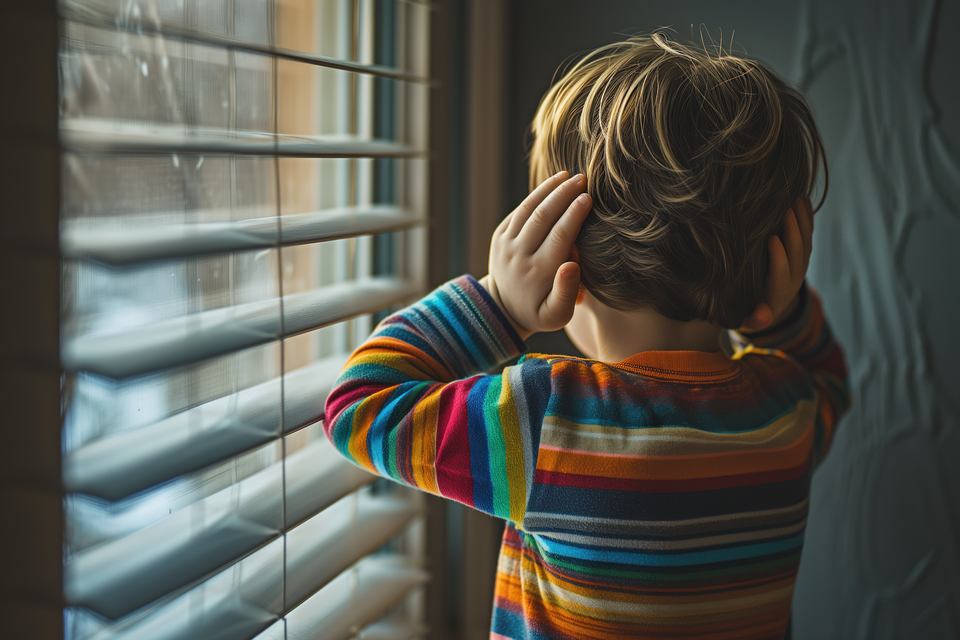
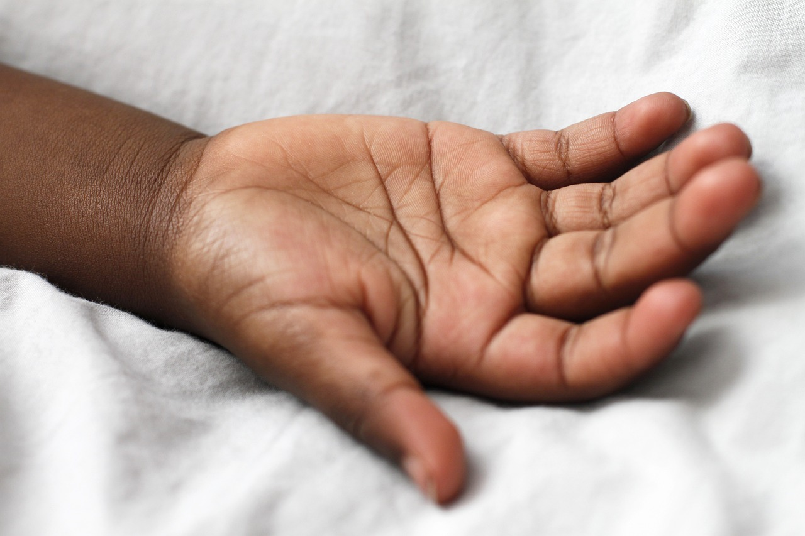

Condição do neurodesenvolvimento
O TEA acompanha a pessoa ao longo da vida. O foco não é cura, mas suporte, acessibilidade, autonomia e qualidade de vida.

Conheça recursos, instituições e atividades educativas pensadas para apoiar famílias e educadores.
Entender o TEA
Jogos para praticar emoções, memória, comunicação, vocabulário e associação visual.
Conhecer os jogos
Encontre caminhos de apoio e instituições ligadas à causa autista.
Ver instituiçõesO site reúne conteúdo introdutório, instituições de apoio, campanhas de doação e minigames educativos. A ideia é transformar conscientização em experiência prática: entender melhor o espectro, apoiar quem precisa e criar momentos de aprendizagem com segurança.
O Transtorno do Espectro Autista (TEA) é uma condição do neurodesenvolvimento que pode afetar comunicação, interação social, comportamento, interesses e percepção sensorial. Cada pessoa autista é única, por isso falamos em espectro.
O TEA acompanha a pessoa ao longo da vida. O foco não é cura, mas suporte, acessibilidade, autonomia e qualidade de vida.
-Photoroom.png)
Segundo o CDC, cerca de 1 em cada 31 crianças de 8 anos foi identificada com TEA nos Estados Unidos, em dados de vigilância de 2022.
-Photoroom.jpg)
Algumas pessoas autistas podem ter diferenças na fala, gestos, contato visual, rotinas e sensibilidade a sons, luzes, texturas ou cheiros.
Habilidades e necessidades de suporte variam entre pessoas autistas e também podem mudar ao longo da vida.
Diferenças na comunicação, interação, brincadeira, rotina e sensibilidade sensorial podem aparecer na infância.
Intervenções psicossociais baseadas em evidências podem apoiar comunicação, habilidades sociais e bem-estar.
Acessibilidade, informação e redes de apoio ajudam a reduzir barreiras para pessoas autistas e familiares.
Baseado em materiais da OMS, CDC, Ministério da Saúde e W3C/WAI.
Se você ou alguém que você conhece está no espectro autista, existem recursos, profissionais e instituições que podem ajudar. Informação confiável é o primeiro passo para buscar apoio adequado.
Conheça organizações e serviços que atuam com acolhimento, orientação e atendimento.
Ver instituições
Entenda sinais comuns, níveis de suporte e cuidados de linguagem sobre o TEA.
Ler conteúdo
Veja respostas rápidas para dúvidas comuns de famílias, estudantes e educadores.
Abrir FAQO Atypical Frealer nasceu para unir tecnologia, informação e solidariedade. A proposta é criar um espaço acolhedor para aprender sobre o TEA e praticar habilidades por meio de minigames educativos.
Sobre nósDoações responsáveis ajudam organizações que acolhem famílias, oferecem orientação e ampliam acesso a cuidado, educação e oportunidades.
Saiba mais